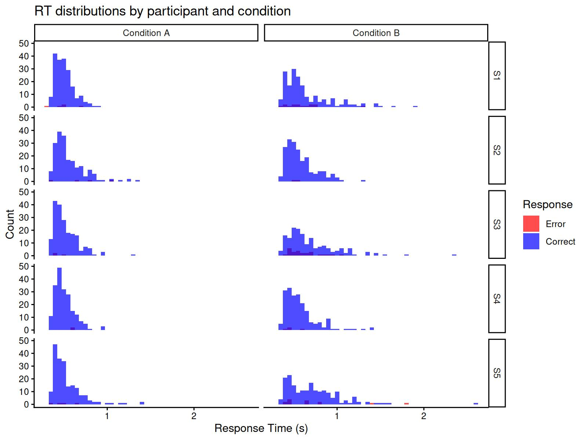
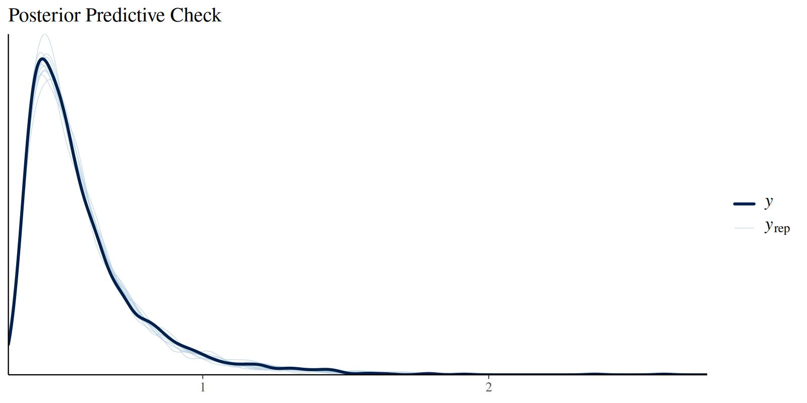

The Censored Shifted Wald Model (cswald)
Gidon Frischkorn
Ven Popov
Source:vignettes/articles/bmm_cswald.Rmd
bmm_cswald.Rmd1 Introduction
The Censored Shifted Wald (cswald) model is a measurement model for choice response time (RT) tasks, particularly suited for tasks with high accuracy (few errors). The model was introduced by Miller et al. (2018) as a simplified alternative to the full Wiener diffusion model (Ratcliff and McKoon 2008) that is easier to estimate while still capturing essential features of the decision-making process.
The cswald model is ideal when:
- You have RT data from a two-choice decision task
- Accuracy is relatively high (error rates < 20%)
- You want to separate different components of the decision process
- You need a computationally efficient alternative to the full diffusion model
2 Theoretical Background
2.1 The Shifted Wald Distribution
The Wald distribution (also known as the inverse Gaussian distribution) describes the first-passage time of a Wiener process (Brownian motion with drift) to a single absorbing boundary. In the context of decision-making, this models the time it takes for evidence to accumulate to a decision threshold.
The shifted Wald distribution adds a non-decision time component to account for processes like stimulus encoding and motor response execution:
\[ RT = T_{decision} + T_{ndt} \]
where \(T_{decision}\) follows a Wald distribution and \(T_{ndt}\) is the non-decision time.
The probability density function of the shifted Wald is:
\[ f(t | v, a, \tau) = \frac{a}{\sqrt{2\pi (t-\tau)^3}} \exp\left(-\frac{(a - v(t-\tau))^2}{2(t-\tau)}\right) \]
for \(t > \tau\), where:
- \(v\) is the drift rate (rate of evidence accumulation)
- \(a\) is the boundary (decision threshold)
- \(\tau\) is the non-decision time
2.2 Censoring for Error Responses
In tasks with high accuracy, most responses are correct. The “censored” aspect of the model refers to how error responses are handled. Instead of modeling errors as arising from a separate accumulation process toward the wrong boundary (as in the full diffusion model), errors are treated as censored observations — trials where the correct response had not yet been reached.
This censoring approach assumes that:
- Correct responses follow the shifted Wald distribution
- Error responses represent trials where the accumulation process was interrupted before reaching the correct boundary
The likelihood for a correct response is the Wald density:
\[ L_{correct}(t) = f_{Wald}(t - \tau | v, a) \]
The likelihood for an error response is the survivor function (1 - CDF):
\[ L_{error}(t) = S_{Wald}(t - \tau | v, a) = 1 - F_{Wald}(t - \tau | v, a) \]
2.3 Relationship to the Diffusion Model
The cswald model can be seen as a simplification of the Wiener diffusion model that makes certain assumptions:
- Single boundary: Only the correct response boundary is explicitly modeled
- Unbiased starting point: The starting point is assumed to be equidistant from both boundaries
- High accuracy: The model works best when error rates are low
For tasks with substantial error rates (> 20%), the competing risks version
of the model (version = "crisk") provides a more appropriate fit by
modeling both boundaries explicitly.
3 Model Versions
The bmm package implements two versions of the cswald model:
3.1 Simple Version (version = "simple")
The simple version treats errors as censored correct responses. It estimates:
- drift: The drift rate (rate of evidence accumulation toward the correct response)
- bound: The distance from the starting point to the correct boundary
- ndt: Non-decision time
- s: Diffusion constant (usually fixed to 1 for scaling)
This version is best suited for tasks with error rates below 20%.
Important note on boundary parameterization: The bound parameter in the
simple version represents only the distance from the (unbiased) starting point
to the correct response boundary. This is half the total boundary
separation in the standard diffusion model parameterization. To convert the
simple version’s bound estimate to the equivalent DDM or crisk boundary
separation, multiply by 2:
\[ a_{DDM} = 2 \times \text{bound}_{simple} \]
3.2 Competing Risks Version (version = "crisk")
The competing risks version models both correct and error responses as arising from racing accumulators toward opposite boundaries. It estimates:
- drift: The drift rate (can be positive or negative; negative drift indicates evidence accumulation toward the lower boundary)
- bound: Total boundary separation (full distance between both boundaries, consistent with DDM parameterization)
- ndt: Non-decision time
- zr: Relative starting point (proportion of boundary separation, 0.5 = unbiased)
- s: Diffusion constant
This version is better suited for tasks with substantial error rates. The
bound parameter is directly comparable to the boundary separation in the
standard diffusion model.
3.3 When to Use Each Version
3.4 Comparison with the Wiener Diffusion Model
The cswald model in bmm is related to but distinct from the full Wiener
diffusion model available in brms::wiener(). Key differences:
| Feature | cswald (simple) | cswald (crisk) | brms::wiener |
|---|---|---|---|
| Boundaries | Single | Both | Both |
| Starting point | Fixed (unbiased) | Estimated | Estimated |
| Bound param | Half separation | Full separation | Full separation |
| Drift sign | Positive only | Positive/negative | Positive/negative |
| Best for | High accuracy | Moderate accuracy | Any accuracy |
| Computation | Fast | Moderate | Slower |
| Parameters | 3-4 | 4-5 | 4-5 |
For tasks with low error rates, the cswald model provides equivalent
inferences with faster computation. When comparing results across model
versions, remember to multiply the simple version’s bound by 2 to get the
equivalent total boundary separation.
4 Fitting the Model with bmm
4.2 Example Dataset: Ratcliff & Rouder (1998)
The rr98 dataset from the rtdists package provides a classic example of
choice response time data suitable for evidence accumulation models. The
dataset contains responses from a brightness discrimination task where
participants judged whether pixel arrays were “high” or “low” brightness.
# Load the dataset from rtdists (already a dependency of bmm)
data(rr98, package = "rtdists")
# Remove outliers as in the original analysis
rr98 <- rr98[!rr98$outlier, ]
# Examine structure
str(rr98[, c("id", "rt", "response_num", "instruction", "strength")])
#> 'data.frame': 23848 obs. of 5 variables:
#> $ id : Factor w/ 3 levels "jf","kr","nh": 1 1 1 1 1 1 1 1 1 1 ...
#> $ rt : num 0.801 0.68 0.694 0.582 0.925 0.605 0.626 0.736 0.662 0.8 ...
#> $ response_num: int 1 1 2 2 1 1 2 1 1 2 ...
#> $ instruction : Factor w/ 2 levels "speed","accuracy": 2 2 2 2 2 2 2 2 2 2 ...
#> $ strength : int 8 7 19 21 19 10 20 14 10 15 ...
# Check error rates by condition
with(rr98, tapply(response_num == 1, list(id, instruction), mean))
#> speed accuracy
#> jf 0.5011512 0.4764767
#> kr 0.4444152 0.4538970
#> nh 0.4920598 0.4874612The dataset includes:
- rt: Response time in seconds
- response_num: Binary response (1 = “dark”, 2 = “light”)
- instruction: Speed vs accuracy emphasis
- strength: Task difficulty (0-32, brightness level)
- id: Participant identifier
This dataset is particularly well-suited for the cswald model because:
- High accuracy: Most conditions have error rates below 20%, ideal for the simple version
- Multiple conditions: Allows testing how task manipulations affect model parameters
- Trial-level data: Contains the RT and response for every trial
- Classic reference: Widely used in the evidence accumulation literature
For a complete analysis example using this dataset, see the rtdists package
vignette: vignette("reanalysis_rr98", package = "rtdists").
4.3 Generating Simulated Data with Hierarchical Structure
We’ll simulate data from multiple participants with individual differences in
drift rates, demonstrating how to fit hierarchical models with bmm:
# set seed for reproducibility
set.seed(42)
# simulate data for 3 participants in two conditions
n_subjects <- 5
n_per_condition <- 200 # fewer trials per condition to keep file size manageable
# Population-level parameters
pop_drift_A <- 3.0 # mean drift for condition A
pop_drift_B <- 1.8 # mean drift for condition B
drift_sd <- 0.5 # between-subject SD in drift
bound <- 1.5 # shared boundary
ndt <- 0.3 # shared non-decision time
# Generate subject-specific drift rates
subject_drifts_A <- rnorm(n_subjects, pop_drift_A, drift_sd)
subject_drifts_B <- rnorm(n_subjects, pop_drift_B, drift_sd)
# Simulate data for each subject and condition
dat_list <- list()
for (i in 1:n_subjects) {
# Condition A
dat_A <- rcswald(n = n_per_condition,
drift = subject_drifts_A[i],
bound = bound,
ndt = ndt)
dat_A$id <- paste0("S", i)
dat_A$condition <- "A"
# Condition B
dat_B <- rcswald(n = n_per_condition,
drift = subject_drifts_B[i],
bound = bound,
ndt = ndt)
dat_B$id <- paste0("S", i)
dat_B$condition <- "B"
dat_list[[2*i-1]] <- dat_A
dat_list[[2*i]] <- dat_B
}
# Combine all data
dat <- do.call(rbind, dat_list)
dat$id <- factor(dat$id)
dat$condition <- factor(dat$condition)
# Check error rates by subject and condition
error_rates <- aggregate(response ~ id + condition, data = dat,
FUN = function(x) mean(x == 0))
print(error_rates)
#> id condition response
#> 1 S1 A 0.025
#> 2 S2 A 0.020
#> 3 S3 A 0.015
#> 4 S4 A 0.010
#> 5 S5 A 0.020
#> 6 S1 B 0.075
#> 7 S2 B 0.010
#> 8 S3 B 0.130
#> 9 S4 B 0.020
#> 10 S5 B 0.065Let’s visualize the RT distributions by participant:
ggplot(dat, aes(x = rt, fill = factor(response))) +
geom_histogram(binwidth = 0.05, position = "identity", alpha = 0.7) +
facet_grid(id ~ condition, labeller = labeller(
condition = c(A = "Condition A", B = "Condition B")
)) +
scale_fill_manual(values = c("0" = "red", "1" = "blue"),
labels = c("0" = "Error", "1" = "Correct"),
name = "Response") +
labs(x = "Response Time (s)", y = "Count",
title = "RT distributions by participant and condition") +
theme_classic()
4.4 Specifying the Model
First, specify the model using cswald():
model <- cswald(
rt = "rt",
response = "response",
version = "simple"
)4.5 Specifying the Hierarchical Formula
We want to estimate:
- Population-level effects: How drift rate varies by condition
- Individual differences: Random effects for drift rate by participant
- Shared parameters: Boundary and non-decision time constant across participants
The formula includes both fixed effects for condition and random effects (varying intercepts) for participants:
formula <- bmf(
drift ~ 0 + condition + (0 + condition | id), # fixed condition effects + random subject effects
bound ~ 1, # shared boundary
ndt ~ 1 # shared non-decision time
)The (0 + condition | id) term in the drift formula specifies random slopes
for each condition by participant. This allows the model to estimate:
- A population-level drift rate for each condition
- Individual deviations from these population means for each condition
- The variability (SD) and correlation of these individual differences across conditions
This hierarchical structure provides several advantages:
- Partial pooling: Individual estimates are pulled toward the group mean, providing more stable estimates for participants with less data
- Uncertainty quantification: The model quantifies both within- and between-subject variability
- Shrinkage: Extreme individual estimates are regularized toward the group mean
4.6 Fitting the Hierarchical Model
Now we fit the model with hierarchical structure. The random effects allow each participant to have their own drift rate while estimating the population-level mean drift for each condition:
4.7 Inspecting Results
summary(fit)
#> Loading required namespace: rstan
#> Warning: There were 12 divergent transitions after warmup. Increasing
#> adapt_delta above 0.9 may help. See
#> http://mc-stan.org/misc/warnings.html#divergent-transitions-after-warmup#> Model: cswald(rt = "rt",
#> response = "response",
#> version = "simple")
#> Links: drift = log; bound = log; ndt = log; s = log
#> Formula: drift ~ 0 + condition + (0 + condition | id)
#> bound ~ 1
#> ndt ~ 1
#> s = 0
#> Data: dat (Number of observations: 2000)
#> Draws: 4 chains, each with iter = 1000; warmup = 500; thin = 1;
#> total post-warmup draws = 2000
#>
#> Multilevel Hyperparameters:
#> ~id (Number of levels: 5)
#> Estimate Est.Error l-95% CI u-95% CI
#> sd(drift_conditionA) 0.16 0.12 0.04 0.45
#> sd(drift_conditionB) 0.38 0.21 0.15 0.92
#> cor(drift_conditionA,drift_conditionB) -0.14 0.46 -0.87 0.76
#> Rhat Bulk_ESS Tail_ESS
#> sd(drift_conditionA) 1.00 551 954
#> sd(drift_conditionB) 1.01 491 494
#> cor(drift_conditionA,drift_conditionB) 1.00 760 977
#>
#> Regression Coefficients:
#> Estimate Est.Error l-95% CI u-95% CI Rhat Bulk_ESS Tail_ESS
#> bound_Intercept -0.23 0.04 -0.30 -0.15 1.00 1219 1052
#> ndt_Intercept -1.22 0.02 -1.26 -1.20 1.00 1182 951
#> drift_conditionA 1.22 0.09 1.02 1.37 1.00 804 693
#> drift_conditionB 0.80 0.21 0.40 1.27 1.01 587 378
#>
#> Constant Parameters:
#> Value
#> s_Intercept 0.00
#>
#> Draws were sampled using sample(hmc). For each parameter, Bulk_ESS
#> and Tail_ESS are effective sample size measures, and Rhat is the potential
#> scale reduction factor on split chains (at convergence, Rhat = 1).4.7.1 Population-Level Effects
The model uses link functions for the parameters (log link for all parameters), so we need to exponentiate to get values on the original scale:
# Extract population-level (fixed) effects
fixef_est <- brms::fixef(fit)
# Transform to original scale
cat("Population-level estimates:\n")
#> Population-level estimates:
cat("drift (Condition A):", exp(fixef_est["drift_conditionA", "Estimate"]), "\n")
#> drift (Condition A): 3.381323
cat("drift (Condition B):", exp(fixef_est["drift_conditionB", "Estimate"]), "\n")
#> drift (Condition B): 2.216534
cat("bound (half-separation):", exp(fixef_est["bound_Intercept", "Estimate"]), "\n")
#> bound (half-separation): 0.7945093
cat("ndt:", exp(fixef_est["ndt_Intercept", "Estimate"]), "\n")
#> ndt: 0.2940645
cat("\nTrue population-level parameters:\n")
#>
#> True population-level parameters:
cat("drift (Condition A):", pop_drift_A, "\n")
#> drift (Condition A): 3
cat("drift (Condition B):", pop_drift_B, "\n")
#> drift (Condition B): 1.8
cat("bound:", bound, "\n")
#> bound: 1.5
cat("ndt:", ndt, "\n")
#> ndt: 0.34.7.2 Individual Differences
The random effects capture individual differences in drift rate:
# Extract random effects (deviations from population mean on log scale)
ranef_est <- brms::ranef(fit)
# Get subject-specific drift estimates by adding random effects to fixed effects
cat("\nSubject-specific drift estimates (Condition A):\n")
#>
#> Subject-specific drift estimates (Condition A):
for (i in 1:n_subjects) {
subj_id <- paste0("S", i)
# Add random effect to fixed effect, then exponentiate
drift_subj <- exp(fixef_est["drift_conditionA", "Estimate"] +
ranef_est$id[subj_id, "Estimate", "drift_conditionA"])
cat(subj_id, ": ", round(drift_subj, 2),
" (true: ", round(subject_drifts_A[i], 2), ")\n", sep = "")
}
#> S1: 3.64 (true: 3.69)
#> S2: 3.02 (true: 2.72)
#> S3: 3.51 (true: 3.18)
#> S4: 3.64 (true: 3.32)
#> S5: 3.34 (true: 3.2)
cat("\nSubject-specific drift estimates (Condition B):\n")
#>
#> Subject-specific drift estimates (Condition B):
for (i in 1:n_subjects) {
subj_id <- paste0("S", i)
drift_subj <- exp(fixef_est["drift_conditionB", "Estimate"] +
ranef_est$id[subj_id, "Estimate", "drift_conditionB"])
cat(subj_id, ": ", round(drift_subj, 2),
" (true: ", round(subject_drifts_B[i], 2), ")\n", sep = "")
}
#> S1: 2.11 (true: 1.75)
#> S2: 2.77 (true: 2.56)
#> S3: 1.84 (true: 1.75)
#> S4: 2.81 (true: 2.81)
#> S5: 1.8 (true: 1.77)
# Between-subject variability
cat("\nEstimated SD of random effects (log scale, Cond A | Cond B):\n")
#>
#> Estimated SD of random effects (log scale, Cond A | Cond B):
cat("sd(drift):", brms::VarCorr(fit)$id$sd[,"Estimate"], "\n")
#> sd(drift): 0.1556604 0.3827949
cat("True SD (log scale):", drift_sd, "\n")
#> True SD (log scale): 0.54.8 Model Diagnostics
Check posterior predictive distributions:
brms::pp_check(fit, type = "dens_overlay", ndraws = 10) +
labs(title = "Posterior Predictive Check")
4.9 Hypothesis Testing
We can test whether drift rates differ between conditions using the
brms::hypothesis() function. This tests the difference on the log scale:
# Test if drift rate is higher in Condition A than B
hyp_test <- brms::hypothesis(fit, "drift_conditionA > drift_conditionB")
print(hyp_test)
#> Hypothesis Tests for class b:
#> Hypothesis Estimate Est.Error CI.Lower CI.Upper Evid.Ratio
#> 1 (drift_conditionA... > 0 0.42 0.23 0.06 0.75 22.81
#> Post.Prob Star
#> 1 0.96 *
#> ---
#> 'CI': 90%-CI for one-sided and 95%-CI for two-sided hypotheses.
#> '*': For one-sided hypotheses, the posterior probability exceeds 95%;
#> for two-sided hypotheses, the value tested against lies outside the 95%-CI.
#> Posterior probabilities of point hypotheses assume equal prior probabilities.The output shows:
- Estimate: The posterior mean of the difference (on log scale)
- Est.Error: The standard error of the difference
- CI: The 95% credible interval for the difference
- Evid.Ratio: The evidence ratio (posterior odds) in favor of the hypothesis
- Post.Prob: The posterior probability that the hypothesis is true
To express the difference on the original scale, we can compute the ratio of drift rates:
# Extract posterior samples
posterior <- brms::as_draws_df(fit)
# Compute drift ratio (Condition A / Condition B) on original scale
drift_ratio <- exp(posterior$b_drift_conditionA - posterior$b_drift_conditionB)
cat("Drift rate ratio (A/B):\n")
#> Drift rate ratio (A/B):
cat(" Median:", round(median(drift_ratio), 2), "\n")
#> Median: 1.54
cat(" 95% CI: [", round(quantile(drift_ratio, 0.025), 2), ", ",
round(quantile(drift_ratio, 0.975), 2), "]\n", sep = "")
#> 95% CI: [0.89, 2.33]
cat(" P(ratio > 1):", round(mean(drift_ratio > 1), 3), "\n")
#> P(ratio > 1): 0.958
cat("\nTrue drift ratio:", round(pop_drift_A / pop_drift_B, 2), "\n")
#>
#> True drift ratio: 1.67This shows that the model successfully recovers the difference between conditions, with strong evidence that drift rates are higher in Condition A.